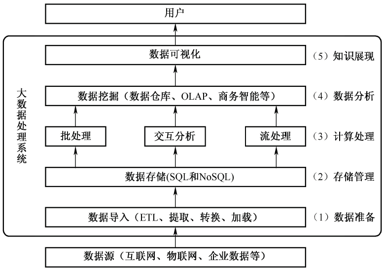
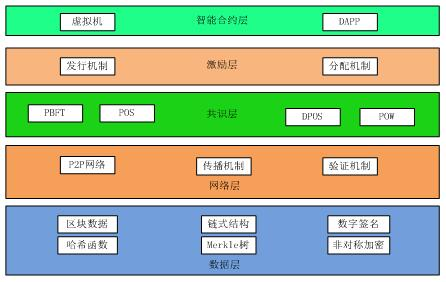

Software extra note
多媒体
MPEG-7 是ISO制定的多媒体内容描述接口的标准。
彩色视频信号数字化过程中，利用图像子采样技术通过降低对色度信号的采样频率，达到减少编码数据量的目的。
分类：
- 感觉媒体：视觉、味觉、触觉、听觉、味觉；
- 表示媒体：文字、图形、图像、音频、视频；
- 显示媒体：显示器、打印机、音箱；
- 存储媒体：磁盘、光盘、内存；
- 传输媒体：电缆、光缆、交换设备；
声音
- 模拟信号，转换成数字信号：
- 采样：采样频率大于声音最高频率的两倍；
- 量化：
- 编码：哈夫曼树编码
数据传输率公式：
- 数据传输率（bps）=采样频率（Hz） 量化位数（bit）声道数
- KHz = 1000Hz
声音信号数据量公式：
- 声音信号数据量（Byte）=数据传输率（bps）* 持续时间 (s) / 8
声音格式文件：
- Wave
- Sound
- Audio
- Voice
- AIFF
- MPEG-1 Audio Layer
- RealAudio
- MIDI
图像
颜色可以分为：
- 色调：如红黄蓝；
- 饱和度 ：某一颜色的深浅程度；
- 亮度：明暗程度；
色彩模型：
- RGB颜色模型；
- YUV颜色模型；
- CMY颜色模型：如打印机；
新技术
大数据
特点：5V
- Volume：数据体量大
- Variety：数据类型多
- Value：数据价值密度低
- Velocity：处理速度快
- Veracity：真实性，数据的准确性和可信赖度，即数据的质量
大数据系统处理流程：

大数据的关键环节：
- 数据采集：ETL
- 数据存储：SQL/NOSQL
- 数据管理：分布式并行处理技术，MR/Spark；
- 数据分析和挖掘：机器学习，OLAP，钻取、分析 、展示；
云计算
类型：
- Iaas：基础设施即服务，包括处理、存储、网络和其它基本的计算资源；
- Paas：平台即服务，包括操作系统、编程语言的运行环境、数据库和Web服务器；
- Saas：软件即服务，向用户提供应用软件(如CRM、办公软件等)、组件、工作流等虚拟化软件的服务，SaaS一般采用Web技术和SOA架构，通过 Internet向用户提供多租户、可定制的应用能力；
关键技术：
- 网格计算：并行计算理论，网格计算的基础技术Web Service，云计算平台主要依赖SOA；
- 虚拟化：基础设施的虚拟化，核心是集群计算和分区计算的结合；
物联网
关键技术：嵌入式技术和传感器技术；
从技术架构上，分为：
- 感知层：核心，信息采集和物物之间的信息传输，如传感器、RFID；
- 网络层：利用无线和有线网络对采集的数据进行编码、认证和传输，是物联网三层中标准化程度最高、产业化能力最强、最成熟的部分；
- 应用层：提供丰富的基于物联网的应用，是物联网发展的根本目标
移动互联网
技术层面的定义：
- 以宽带IP为技术核心，可以同时提供语音、数据、多媒体等业务的开放式基础电信网络
移动互联网=移动通信网络+互联网内容和应用
- 核心是互联网，应用和内容是移动互联网的根本；
新特征：接入移动性、时间碎片性、生活相关性、终端多样性
六大技术产业领域：
- 关键应用服务平台
- 网络平台技术
- 移动智能终端软件平台技术
- 移动智能终端硬件平台技术
- 移动智能终端原材料元器件技术
- 安全控制技术
关键技术
- 架构技术SOA：服务之间通过简单、精确定义接口进行通信，不涉及底层编程接口和通讯模型，Web Service是目前实现SOA的主要技术；
- 页面展示技术Web2.0：高参与度、互动接受；
- 页面展示技术HTML5：在网页上直接调试和修改，支持地理位置定位；
- 主流开发平台Android：基于Linux，开源，Java；
- 主流开发平台IOS：闭源，Object-C，C
区块链
区块链是分布式数据存储、点对点传输、共识机制、加密算法等计算机技术的新型应用模式。

核心技术：
- 分布式账本/去中心化
- 哈希加密/防篡改
- 非对称加密/数字签名
- 共识算法（博弈论）/全民记账
互联网+
实现互联网与传统产业的联合，如滴滴、美团；
六大特征：一是跨界融合 二是创新驱动 三是重塑结构 四是尊重人性 五是开放生态 六是连接一切。
制造业服务化将价值链由以制造为中心向以服务为中心转变。
2015年3月，国务院总理李克强提出“互联网+”，“互联网+”成为两化(工业化和信息化)融合的升级版本。
- 消费领域向生产领域拓展
- 2025年，体系基本完善；
智慧城市
智慧城市五层模型：
- 物联感知层：智能感知能力，信息的采集、识别和监测；
- 通信网络层：网络通信基础设施，互联网、电信网、广播电视网、城市专用网、无线网络（如Wi-Fi）、移动4/5G
- 计算与存储层：软件资源、计算资源和存储资源
- 数据及服务支撑层：利用SOA（面向服务的体系架构）、云计算、大数据等技术，通过数据和服务的融合，支撑承载智慧应用层中的相关应用，提供应用所需的各种服务和共享资源。
- 智慧应用层：行业或领域的智慧应用，如智慧交通等；
三个支撑体系：
- 安全保障体系：构建统一的安全平台
- 建设和运营管理体系：整体的运维管理机制
- 标准规范体系：智慧应用信息系统的总体规划和工程建设
5G
第五代移动通信技术，新一代蜂窝移动通信技术。最高可达10Gbit/s，用户体验的速率为1Gbps
关键技术：
- 超密集异构网络、自组织网络技术、内容分发网络、设备到设备通信 (D2D)、M2M通信、信息中心网络 (ICN)
知识产权
地域性：仅在申请的国家内有效；
著作权法
示例：
- 学术论文引用，不可以引用未发表的作品；
注意条文
- 第二条：中国公民、法人或者非法人组织的作品，不论是否发表，依照本法享有著作权；
- 第三条：作品，是指文学、艺术和科学领域内具有独创性并能以一定形式表现的智力成果
- 工程设计图、产品设计图等；
- 计算机软件；
- 。。。
- 第五条：本法不适用于
- 具有立法、行政、司法性质的文件及其官方正式译文；
- 单纯事实消息；
- 历法、通用数表、通用表格和公式；
- 第十条：著作权包括下列人身权和财产权；
- 发表权、署名权、修改权、保护作品完整权、复制权、发行权、出租权、展览权、表演权、放映权、广播权、信息网络传播权、摄制权、改编权、翻译权、汇编权（编排）；
- 从
复制权后，可以获取报酬，并且可以部分转让； - 第十八条：职务作品，作者具有署名权，其他权利由法人或非法人组织享有，可以给予作者一定奖励：
- 利用法人或者非法人的物质技术条件，并由法人或非法人组织承担责任；
- 除上述之外的作品，著作权由作者享有，但法人具有业务范围内优先使用，且两年内，不可以给竞争对手使用；
- 第十九条：未约定合同的受委托创作的作品，著作权属于受托人；
- 第二十条：作品原件所有权的转移，不改变作品著作权的归属，但展览权由作品原件的所有人享有。
- 第二十二条：作者的署名权、修改权、保证作品完整权的保护期不受限制；
- 第二十三条：
- 自然人的作品，保护期为作者终生及其死亡后五十年；
- 法人或者非法人的职务作品，保护期50年；
计算机保护条例（国务院）
计算机软件，指的是计算机程序（源程序/目标程序）及其有关文档（程序设计说明书/流程图/用户手册等）。
- 软件必须固化在有形物体上；
条例：
- 中国公民、法人或其他组织对其所开发的软件，不论是否发表，依照本法享有著作权；
-
对软件著作权的保护不延及开发软件所有的思想、处理过程、操作方法或者数学概念等；
-
软件著作权的权利：
- 发表权、署名权、修改权、复制权、发行权、出租权、信息网络传播权、翻译权（自然语言文字的转换）；
- 未约定合同的受委托开发的软件，著作权属于受托人；
- 软件著作权的继承人可以依照《中华人民共和国继承法》继承除署名权之外的其他权利；
- 和著作权法条例类似；
专利法
算法可以申请专利，计算机程序不可以申请专利。
- 专利的发明创造包括：发明、实用新型、外观设计三种；
- 职务发明创造：
- 本职工作的发明创造；
- 单位交付的本职工作之外的任务的发明创造；
-
退休、调离、劳动关系终止1年内作出的，与原单位承担的本职工作或分配的任务的有关的发明创造；
-
同样的发明创造只能授予一项专利权；
- 不授予专利权的：
- 科学发现；
- 智力活动的规则和方法；
- 疾病的诊断和治疗方法；
- 动物和植物品种；
- 原子核变换方法获得的物质；
- 图案、色彩等起标识作用的设计；
- 发明专利的期限二十年，实用新型和外观设计期限10年，由申请日开始计算；
商标法
必须使用注册商标的商品，必须申请商标注册，否则不得在市场销售。
- 国家工商行政管理局公布的烟草制品，必须使用注册商标；
- 同一种商品或类似商品，相同或近似的商标注册，申请在先；同一天申请，使用在先；同一天使用，30内协商或抽签；
- 商标的有效期为十年，自核准注册之日起计算；期满前12个月内续期（6个月宽展期），期限为十年；
- 非驰名商标，在不同类别的商品，可以申请相同的商标；
- 驰名商标，即使不同类别的商品，也不可以申请相同的驰名商标；
商业秘密权
不同于一般的知识产权，具有以下的独有特征：
- 商业秘密权的权利主体不是单一的；
- 商业秘密权的客体：技术信息和经营信息，本身具有个性特征；
- 保护期限不具有确定性；
- 商业秘密权的确立无需国家审批；
工作流参考模型
Workflow Reference Model，WRM：6个基本模块
- 工作流执行服务：核心模块
- 工作流引擎；
- 流程定义工具：图形化显示和操作复杂的流程定义；
- 客户端应用；
- 调用应用；
- 管理监控工具；